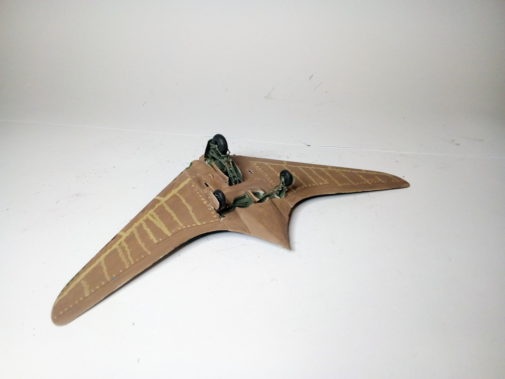
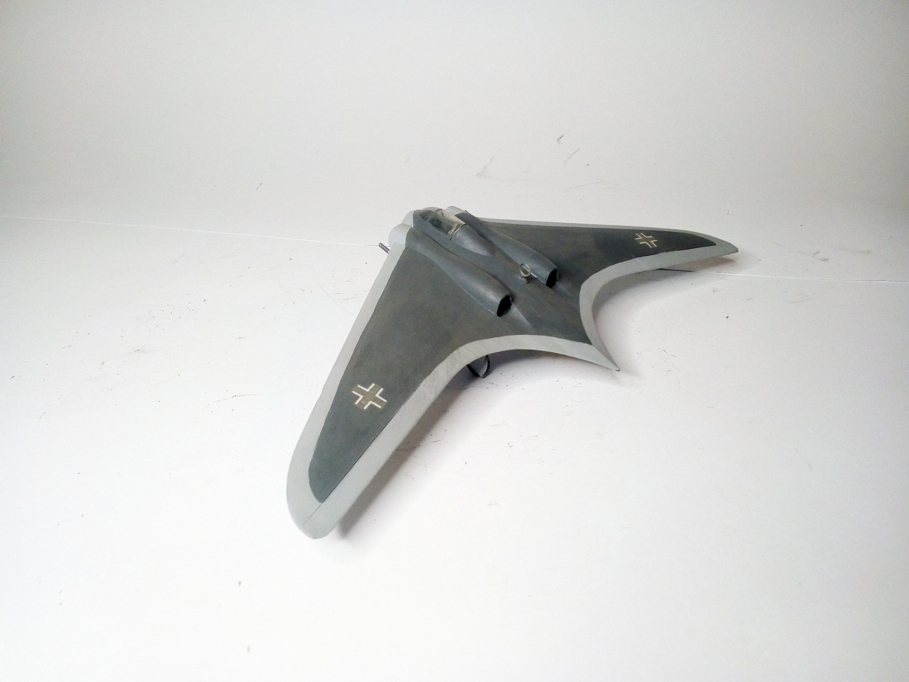

Aerei · scale model archive
Gotha Go 229 (horten IX)
Gotha Go 229 (horten IX) — Kit: Pioneer 2, Scale: 1/72. Air-to-ait proposed camouflage, unpainted natural wood underside #1/72 #Pioneer2

Photo gallery

English description
Air-to-ait proposed camouflage, unpainted natural wood underside
#1/72 #Pioneer2
Descrizione italiana
Air-una-ait proposto mimetica, non verniciata natural wood parte inferiore.